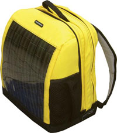

Whether you’re headed back to school or just need something to lug your stuff around town, a backpack is an essential accessory. But rather than just an ordinary bag, check out a solar backpack, which can power or recharge small portable devices using the coolest technology under the sun - solar panels - while still being the handy, reliable companion you need. Most aren’t cheap, but these backpacks can be fun and practical for the busy student, the casual hiker or anyone seeking stylish sustainability.
Although they can’t charge large devices such as laptop computers, these sleek, durable bags can re-juice smaller electronics such as your cell phone, BlackBerry, PDA, MP3 player or handheld GPS (one device at a time). The solar panels are lightweight, and they instantly convert sunlight to electricity. You don’t even have to be outside to harvest sunlight - propping your bag up next to a window works just as well. There’s never been an easier way to tap renewable energy, and here’s a closer look at some sun-seizing standouts.
Brightly colored and endlessly versatile, these bags pack 6.3 watts of power, which, according to the manufacturer, can recharge your devices in about the same amount of time as a wall socket. The solar panels are waterproof, flexible, and - unlike those on other solar bags - can be removed for remote use. Juice Bags fabric is made from recycled 2-liter soda bottles, which create a strong, water-resistant surface. The bags operate using a universal socket known as a CLA (car lighter adapter). Simply plug into the CLA the adapter you would normally use in a car for a particular device and start soaking up solar power. ($250-$275; www.rewarestore.com)
The solar panels on the Voltaic Daypack generate 4 watts of power and create a tough front exterior to protect your electronics. Along with a CLA, this pack is outfitted with 10 other standard adaptors as well as adaptor plugs in universal sizes and for common cell phones. The bag also comes with a battery pack so you can store solar energy for later use when sunlight isn’t available. Wire channels reach throughout the bag so power travels all the way to a compartment on the shoulder strap. Choose from solar panels with green, orange, silver or charcoal lining. ($239; www.voltaicsystems.com)
This backpack is more affordable, but produces less power than the previously mentioned models. It comes with 13 adaptors that fit many common electronics, including your iPod, and the inside is roomy and full of different-sized pockets to snugly secure all your gadgets. ($69.99; Office Depot, in-store only)
|
 REWARE Juice Bags pack 6.3 watts of power, which, according to the manufacturer, can recharge your devices in about the same amount of time as a wall socket. |
REWARE The solar panels on Juice Bags are waterproof, flexible, and can be removed for remote use. |
VOLTAIC SYSTEMS The solar panels on the Voltaic Daypack generate 4 watts of power and create a tough front exterior to protect your electronics. |
|
OFFICE DEPOT The Hypnotics Solar Backpack is roomy and full of different-sized pockets to snugly secure all your gadgets. |
|
|